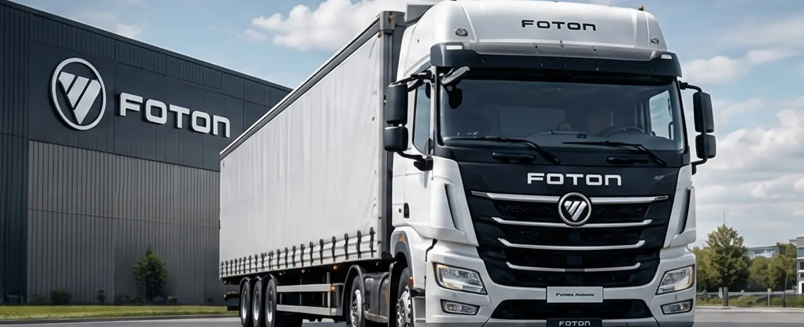

Выгода от 100 000 рублей
на покупку любого грузового автомобиля Aumark S-серии

Станислав, расскажите, кто ваши федеральные клиенты?
Это транспортная компания ПЭК и птицефабрика, но она региональная, хотя мы реализуем её как федеральный заказ от «Персонального решения». С ПЭКом мы работаем со второй половины мая, а с птицефабрикой — с июля. Это транспортная компания ПЭК и птицефабрика, но она региональная, хотя мы реализуем её как федеральный заказ от «Персонального решения». С ПЭКом мы работаем со второй половины мая, а с птицефабрикой — с июля. Это транспортная компания ПЭК и птицефабрика, но она региональная, хотя мы реализуем её как федеральный заказ от «Персонального решения». С ПЭКом мы работаем со второй половины мая, а с птицефабрикой — с июля. Это транспортная компания ПЭК и птицефабрика, но она региональная, хотя мы реализуем её как федеральный заказ от «Персонального решения». С ПЭКом мы работаем со второй половины мая, а с птицефабрикой — с июля. Это транспортная компания ПЭК и птицефабрика, но она региональная, хотя мы реализуем её как федеральный заказ от «Персонального решения». С ПЭКом мы работаем со второй половины мая, а с птицефабрикой — с июля. Это транспортная компания ПЭК и птицефабрика, но она региональная, хотя мы реализуем её как федеральный заказ от «Персонального решения». С ПЭКом мы работаем со второй половины мая, а с птицефабрикой — с июля.
Станислав, расскажите, кто ваши федеральные клиенты?
Это транспортная компания ПЭК и птицефабрика, но она региональная, хотя мы реализуем её как федеральный заказ от «Персонального решения». С ПЭКом мы работаем со второй половины мая, а с птицефабрикой — с июля. Это транспортная компания ПЭК и птицефабрика, но она региональная, хотя мы реализуем её как федеральный заказ от «Персонального решения». С ПЭКом мы работаем со второй половины мая, а с птицефабрикой — с июля. Это транспортная компания ПЭК и птицефабрика, но она региональная, хотя мы реализуем её как федеральный заказ от «Персонального решения». С ПЭКом мы работаем со второй половины мая, а с птицефабрикой — с июля.